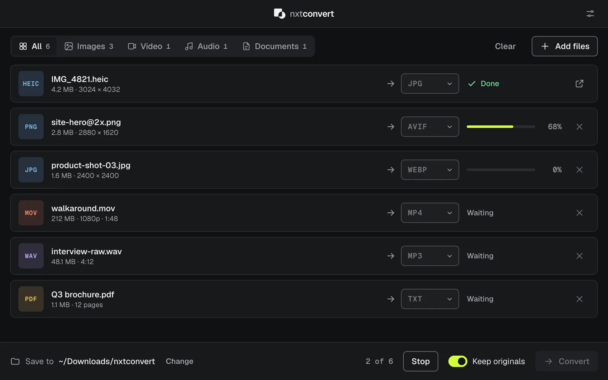
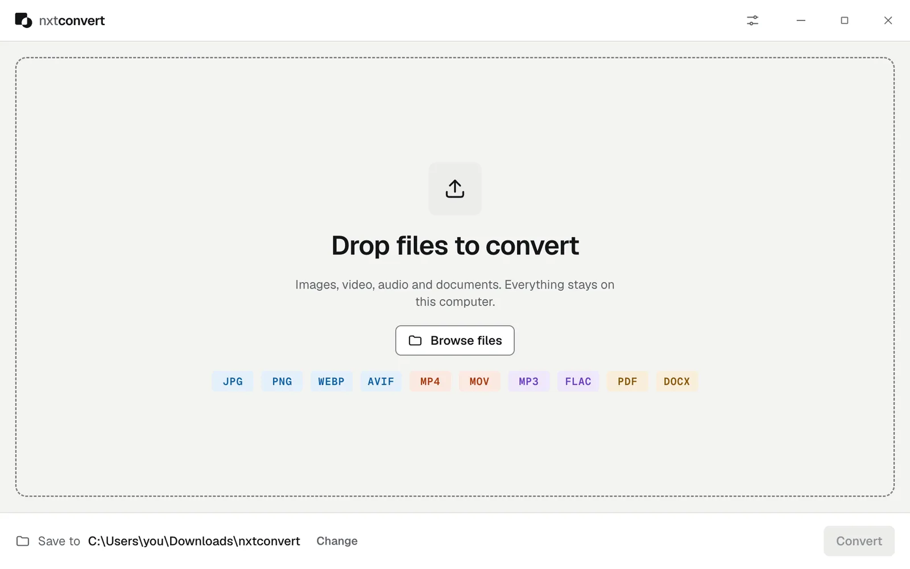

The lightweight file converter that works offline
Convert images, video, audio and documents on your Mac, Windows or Linux computer. Drop files in, pick a format, done. No uploads, no ads, no account.
Free macOS · Windows · Linux Version 0.1.4 38 downloads


A converter that does one thing well
Most converters want your files on their server, your email in their list, or a subscription. nxtconvert is a small app that converts files on your own machine.
Your files stay with you
Everything converts on your computer. Nothing is uploaded, and it works with no internet connection at all.
One small window
Drop files in, pick a format, press Convert. No accounts, no ads, no clutter.
Batches of anything
Mix photos, videos, songs and documents in one queue and set each target, or set them all at once.
Fast native engines
Built on libvips for images and FFmpeg for video and audio, the same engines professional tools use.
Free, no limits
No file size caps, no watermarks, no daily quotas, no trial.
Keeps itself current
Checks for new versions when it opens and asks before installing anything.
Every format you actually use
30 formats across images, video, audio and documents, including iPhone HEIC photos, AVIF and WebP for the web, and FLAC for music.
Images
Video
Audio
Documents
Popular conversions
How it works
Three steps, the same for every kind of file.
- Drop your filesDrag files onto the window or click Browse files. Mix any types you like.
- Pick a formatChoose a target for each file, or set a whole category at once. Formats that can’t be reached are greyed out with the reason.
- ConvertFiles are saved to Downloads/nxtconvert, or a folder you choose. Originals are never overwritten.
Download nxtconvert
Free for macOS, Windows and Linux. Latest version: 0.1.4.
| System | Size | Download |
|---|---|---|
| macOS | 165 MB | Download |
| Windows | 145 MB | Download |
| Linux | 181 MB | Download |
| Linux (.deb) | 141 MB | Download |
Downloads come straight from GitHub Releases. Optional extras: install LibreOffice or Pandoc for ODT, RTF and EPUB, and Poppler to turn PDF pages into images or text.
Questions
Short answers to what people ask most.
Is nxtconvert free?
Yes. nxtconvert is free to download and use, with no ads, no account and no limits on file size or the number of files.
Are my files uploaded anywhere?
No. Every conversion runs on your own computer, and nxtconvert works without an internet connection. The only time it goes online is to check whether a new version is available.
What makes it a lightweight converter?
It is one small window with a drop zone and a queue. There are no accounts, background services, browser extensions or bundled extras. It starts quickly and gets out of your way. The download is bigger than a tiny utility because it includes its own image and video engines (libvips and FFmpeg), so you don’t have to install anything else.
Which formats does it support?
Images: JPG, PNG, WEBP, AVIF, HEIC, GIF, TIFF, BMP, ICO and SVG. Video: MP4, MOV, WEBM, MKV and AVI, plus GIF and MP3 export. Audio: MP3, WAV, FLAC, AAC, M4A, OGG and OPUS. Documents: PDF, DOCX, HTML, TXT and Markdown, with ODT, RTF and EPUB when LibreOffice or Pandoc is installed.
Which systems does it run on?
macOS 12 or later on Apple silicon, Windows 10 and 11 (64-bit), and 64-bit Linux as an AppImage or a .deb package.
Can I convert many files at once?
Yes. Drop in as many files as you like, of any mix of types, and pick a format for each one or set them all at once. nxtconvert works through the queue two files at a time.
How do updates work?
When nxtconvert opens and you are online, it checks for a new version. If there is one, it shows you what changed and asks before downloading anything.
Does it overwrite my original files?
Never. Converted files go to a folder you choose, and if a file with the same name is already there, the new one gets a number added. You can have the originals moved to the Trash after converting, but that is off by default.